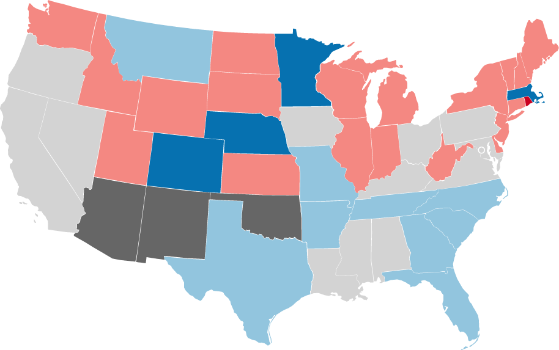

| 1904 United States Gubernatorial Elections | |
|---|---|
| Date | November 8th, 1904 |
|
Republican Seats before — 27 Seats won — 21 Seats after — 24 Seats change — ↓3 |
|
|
Democratic Seats before — 17 Seats won — 6 Seats after — 20 Seats change — 3 |
|
|
Silver Seats before — 1 Seats won — 0 Seats after — 1 Seats change — 0 |
|
|

Democratic gain Democratic hold
Republican gain Republican hold |
|
United States gubernatorial elections were held in 1904, in 33 states, concurrent with the House, Senate, and presidential elections, on November 8, 1904 (except in Arkansas, Georgia, Maine and Vermont, which held early elections).
In Wyoming, a special election was held following the death of Governor DeForest Richards in April 1903.
| State | Incumbent | Party | Result | Opposing Candidates |
|---|---|---|---|---|
| Arkansas (held September 5th, 1904) | Jefferson Davis | Democratic | Re-elected | Harry H. Myers (Republican) John G. Adams (Prohibition) |
| Colorado | James H. Peabody | Republican | Defeated | Alva Adams (Democratic) Robert A. N. Wilson (Prohibition) Andrew H. Floaten (Socialist) James Merwin (People's) J. A. Knight (Socialist Labor) |
| Connecticut | Abiram Chamberlain | Republican | Retired, Republican victory | Henry Roberts (Republican) A. Heaton Richardson (Democratic) George A. Sweetland (Socialist) Oliver G. Beard (Prohibition) Timothy Sullivan (Socialist Labor) Joseph Sheldon (Populist) |
| Delaware | John Hunn | Republican | Retired, Republican victory | Preston Lea (Republican) Caleb S. Pennewill (Democratic) Joseph H. Chandler (Independent Republican) John R. Price (Prohibition) Gustave E. Reinicke (Socialist) |
| Florida | William Sherman Jennings | Democratic | Term-limited, Democratic victory | Napoleon Bonaparte Broward (Democratic) Matthew B. MacFarlane (Republican) W. R. Healey (Socialist) |
| Georgia (held October 5th, 1904) | Joseph M. Terell | Democratic | Re-elected | Unopposed |
| Idaho | John T. Morrison | Republican | Lost re-nomination, Republican victory | Frank R. Gooding (Republican) Henry Heitfeld (Democratic) Theodore B. Shaw (Socialist) Edwin R. Headley (Prohibition) T. W. Bartley (People's) |